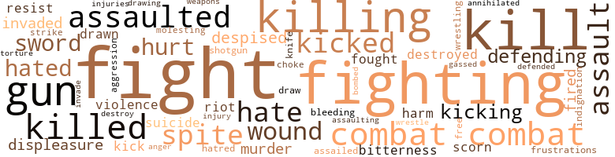
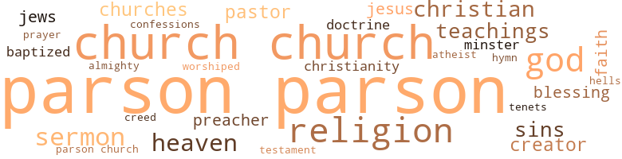

Black Bondage: A Novel of a Doomed Negro in Today's South, by Davis, Joseph A. (1959)
26 music-related terms matched in this text.
Most frequent terms in this topic: section (6); line (3); suite (2); kicking (2); chapter (2)
chapter.n.01
Definition: a subdivision of a written work; usually numbered and titled
| word | sentence |
|---|---|
| chapter | He had been told that the local Red Cross chapter had sponsored a campaign in which people were encouraged to write friendly letters to the boys in service as a patriotic duty . |
| chapter | He refused to let himself believe that death was not the final chapter so far as the works of man were concerned . |
dance.v.02
Definition: move in a pattern; usually to musical accompaniment; do or perform a dance
| word | sentence |
|---|---|
| dancing | They were accompanied by dancing children , weeping sweethearts , and happy parents . |
exposition.n.04
Definition: (music) the section of a movement (especially in sonata form) where the major musical themes first occur
| word | sentence |
|---|---|
| exposition | It was here that he wrote Mein Kampf , an exposition of his political ideas and a call for future political action . |
hymn.n.01
Definition: a song of praise (to God or to a saint or to a nation)
| word | sentence |
|---|---|
| hymn | An opening hymn was sung , then the chaplain prayed and asked God to bless all of the servicemen who were fighting this war , including the enemies . |
kick.v.04
Definition: kick a leg up
| word | sentence |
|---|---|
| kick | " Mrs. Mays , " said Lawyer Hunt , speaking slowly and emphasizing every word , " tell us , did Wesley kick Mr. Parson first , or did Mr. Parson slap him first ? " |
| kicking | Then the kicking began . " |
| kicking | Rumors went around Twinbridge for many years that his organs received permanent damage from the kicking . |
musical_instrument.n.01
Definition: any of various devices or contrivances that can be used to produce musical tones or sounds
| word | sentence |
|---|---|
| instrument | Never again will I allow them to use me as their instrument for giving sanction to their modem methods of death and destruction . |
pipe.n.04
Definition: a tubular wind instrument
| word | sentence |
|---|---|
| pipe | At this particular time she was washing the dishes and Mr. Mills was sitting at the table smoking his pipe . |
section.n.01
Definition: a self-contained part of a larger composition (written or musical)
| word | sentence |
|---|---|
| section | The house was one of those that made up the colored section of Twinbridge . |
| section | In the center of the colored section of town was an institution that was the most important building in the lives of the Twin-bridge colored population . |
| section | The First Methodist Church was located in the center of the white residential section of town . |
| section | Among those who attended this convention and listened to the inflammatory invectives of the politicians against many of their innocent citizens was a young man from the mountainous section of the state . |
| section | He was sitting alone in the study of his fashionable house , located in an exclusive residential section of Washington , D. C . |
| section | Thomas Ravenell , the colored sergeant , as he was later referred to by the men in his section , was very popular . |
sing.v.02
Definition: produce tones with the voice
| word | sentence |
|---|---|
| sang | Evelyn Lewis sang in the choir , which sat on a raised platform facing the congregation . |
| sung | An opening hymn was sung , then the chaplain prayed and asked God to bless all of the servicemen who were fighting this war , including the enemies . |
suite.n.01
Definition: a musical composition of several movements only loosely connected
| word | sentence |
|---|---|
| suite | The four men who made up the inner circle of the all-powerful Crow machine had assembled in the private suite of Mr. James Crow . |
| suite | This suite , which also served as the headquarters for the machine , was located on the tenth floor of the Thomas Jefferson Hotel . |
tune.n.01
Definition: a succession of notes forming a distinctive sequence
| word | sentence |
|---|---|
| line | " Your Honor , " he thundered , " I object to this line of questioning . |
| line | It was not his desire or intention to add to his misery , so he changed his line of questioning to relax the witness . |
| lines | " Never will we allow you to cross over these lines and destroy our way of life , we will fight you into eternity , " said Mr. James Crow , when he discovered that the Citizens ' Protective Association had been organized in Virginia for the purposes of obtaining equal rights for all the people . |
| line | The purpose of this line was to transport coal from the mines of West Virginia to Norfolk , a great seaport city . |
warble.v.01
Definition: sing or play with trills, alternating with the half note above or below
| word | sentence |
|---|---|
| quavering | It is a matter of standing up and fighting for your rights , " answered Wesley , his voice quavering . |
whistle.v.01
Definition: make whistling sounds
| word | sentence |
|---|---|
| whistle | The mill whistle sounded , it was five minutes to seven . |
267 violence-related terms matched in this text.
Most frequent terms in this topic: fight (40); fighting (28); kill (26); killing (15); combat (12)
aggression.n.01
Definition: a disposition to behave aggressively
| word | sentence |
|---|---|
| aggression | " Chief Sims , " he shouted , " who committed the first act of aggression according to the results of your investigation ? " |
anger.n.01
Definition: a strong emotion; a feeling that is oriented toward some real or supposed grievance
| word | sentence |
|---|---|
| anger | For the first time in their married life , he had put his hands on her in anger . |
assail.v.01
Definition: attack someone physically or emotionally
| word | sentence |
|---|---|
| assaulted | He had already decided what he would do if he were assaulted by Mr. Parson . |
| assaulted | " Mr. Parson , " he said , " take your time and tell the court in your own words what happened to you on the day you were assaulted by Wesley Ravenell . " |
| assaulted | You assaulted Wesley Ravenell first , did n't you ? " |
| assaulted | Also , he explained to the court , it was his honest opinion that the incident would not have happened if his boy had not been assaulted first by Mr. Parson . |
| assaulted | " Wesley , " he said , " you are here to tell this court exactly what happened on the day Mr. Parson claims he was assaulted by you . |
| assaulting | First , I am asking that the charges against my client be dismissed and that Mr. Herbert Parson be found guilty of assaulting a minor . |
| assaulted | When he still refused , he was most brutally assaulted for no justifiable reason whatsoever . |
| assaulted | Mr. Parson has been brutally assaulted by him . |
attack.v.01
Definition: launch an attack or assault on; begin hostilities or start warfare with
| word | sentence |
|---|---|
| assailed | Of course , being only six years old and not familiar with the concept of master and slave , Wesley was not expected to keep his mouth shut when his honor and integrity had been assailed . |
bleeding.n.01
Definition: the flow of blood from a ruptured blood vessel
| word | sentence |
|---|---|
| bleeding | They were looking forward to the return of the days when everyone could relax and not think of the bleeding , bruised , and war-weary world . |
bombard.v.02
Definition: throw bombs at or attack with bombs
| word | sentence |
|---|---|
| bombed | On this day , Japanese planes came out of the morning sky and bombed the great American naval base at Pearl Harbor , Hawaii . |
brawl.n.02
Definition: a noisy fight in a crowd
| word | sentence |
|---|---|
| free-for-all | During the course of the free-for-all conversation taking place in the church yard , someone said something that swept through the crowd like a fire . |
contemn.v.01
Definition: look down on with disdain
| word | sentence |
|---|---|
| scorn | The way of life in which they grew up had pointed a finger of scorn at them from their first day in the world . |
| scorn | Because they could be identified as colored , even though white men 's blood flowed in their veins , a finger of scorn was pointed at them . |
| despised | She threatened to do so often but never did anything to carry out her numerous threats , even though she despised her husband . |
| despised | The French were still celebrating the recent victory over the hated and despised Germans . |
| despised | They believed that the American soldier and the American dollar would protect them forever from their despised enemies across the Rhine River . |
destroy.v.04
Definition: put (an animal) to death
| word | sentence |
|---|---|
| destroyed | The river had been crossed and the bridge had been destroyed so that he could not recross the river . |
| destroyed | She had almost destroyed his fighting spirit with her nagging . |
| destroy | " Never will we allow you to cross over these lines and destroy our way of life , we will fight you into eternity , " said Mr. James Crow , when he discovered that the Citizens ' Protective Association had been organized in Virginia for the purposes of obtaining equal rights for all the people . |
displeasure.n.01
Definition: the feeling of being displeased or annoyed or dissatisfied with someone or something
| word | sentence |
|---|---|
| displeasure | All you have done during our whole marriage is express your displeasure in everything I do or say . |
| displeasure | In this way we will be saying to the world that a similar fate awaits all in Virginia who incur our displeasure . |
| displeasure | They were aware of the fact that he was responsible for their getting their jobs , he was responsible for their keeping them , and he would be responsible for their losing those jobs if ever they incurred his displeasure . |
draw.v.23
Definition: pull (a person) apart with four horses tied to his extremities, so as to execute him
| word | sentence |
|---|---|
| drawn | For the next few days he was of the opinion that he was being drawn toward the ocean by an irresistible tide that was destined to influence his entire life , and that he was powerless to resist this tide which was pulling him . |
| draw | They will probably draw up a petition against you before this week is over . " |
| drawn | No written contract had been drawn up regarding the terms . |
| drawing | The crisis that Ravenell had gone through did not succeed in drawing Thomas and Evelyn closer together after the trial was over . |
eliminate.v.03
Definition: kill in large numbers
| word | sentence |
|---|---|
| annihilated | The number of those who were annihilated by the steamroller of the Crow machine will never be known . |
fight.n.02
Definition: the act of fighting; any contest or struggle
| word | sentence |
|---|---|
| fighting | All that was necessary to bring his enemies out fighting was to make one small mistake . |
| combat | If you are called upon in combat to pay the supreme price , then the bravely and not like a cringing coward . |
| combat | He was in combat with an infantry assault platoon . |
| combat | This meant that the division had to get combat ready as quickly as possible . |
| combat | The men were kept in a state of combat readiness at all times . |
| combat | Their achievements and their deeds of bravery during the liberation of the continent of Europe have not been excelled by any unit on the field of combat . |
| combat | The 101st Airborne Division had been in continuous combat for six months . |
| combat | They were withdrawn from combat and sent to a rest area in the vicinity of Camp Mourmelon , France . |
| fighting | One day when there was a lull in the fighting , he asked a fellow-soldier to tell him what they meant by fighting to make the world safe for democracy . |
| fighting | For the next few days there was a lull in the fighting , and during this time Thomas had time to do some thinking . |
| fighting | As soon as the Germans were thrown back from the " Gates of Paris , " General John J. Pershing began his first action as an independent military commander , and Thomas ' division was in the thick of the fighting again . |
| combat | " There is a law on the books which says a man who believes that engaging in combat training or combat is against his conscience or his religious convictions can be classified as a conscientious objector . |
| combat | " There is a law on the books which says a man who believes that engaging in combat training or combat is against his conscience or his religious convictions can be classified as a conscientious objector . |
| combat | Once it has been granted , he is automatically exempted from taking combat training or participating in active combat itself , that is as a combat soldier . " |
| combat | Once it has been granted , he is automatically exempted from taking combat training or participating in active combat itself , that is as a combat soldier . " |
| combat | Once it has been granted , he is automatically exempted from taking combat training or participating in active combat itself , that is as a combat soldier . " |
fight.n.05
Definition: a boxing or wrestling match
| word | sentence |
|---|---|
| fight | Lafayette and France had been repaid with interest for the assistance given us during our fight for freedom . |
| fight | From this day on , Europe would be a place to go for a vacation , not for a fight . |
| fight | He even told his Deacon Board that , if they determined that a majority of the members wanted his resignation , he would gladly offer it , as he was too old to become involved in a church fight . |
| fight | His fight not to become one of them had been successful so far , but now he had fallen and was one of them . |
| fight | The meeting was then adjourned , but the minister was not sure he had won the fight . |
| fight | We have gotten along so far without having a fight , and I do n't see why we should have one now . |
| fight | Dear Diary : The fight is on ; everyone is talking about it . |
| fight | Oh , how I wish I could help him in his fight . |
| fight | If he could win this fight without the aid of Mr. Greer , he could prove that one could defy Mr. Greer and still remain in Twinbridge . |
| fight | Her boy had been involved in a fight with old Herbert Parson , the postmaster . |
| fight | In a few minutes everyone in the sawmill knew that Wesley Ravenell had been involved in a fight with Herbert Parson . |
| fight | " Then you overheard the conversation between Mr. Parson and Wesley before the actual fight took place . " |
| fight | Lawyer Hunt retorted , " Your Honor , the conversation has a direct bearing upon the actual fight . " |
| fight | " Mr. Parson came through the door into the outer room , and the next thing I know the fight had started . " |
| fight | As he stood there facing the man who had become the symbol of all that his people were fighting , he mused to himself , " I may lose this battle today , but I promise myself and my Maker that I will give them a fight the like of which they have never seen and which they will remember until the last one of them is only a headstone in a cemetery . " |
| fight | I started life as a fighter , but there is n't much fight left in me now . |
| Fight | Fight for your rights , son , fight for your rights . " |
| fight | Fight for your rights , son , fight for your rights . " |
| fight | It is for you and other members of the younger generation to take up the fight and continue it until we are accepted as equals by the white man . " |
| fight | " Do you think we will win our fight for equality ? " |
| fight | The fight between the Crow machine and the Citizens ' Protective Association was a struggle to the bitter end . |
| fight | The services of the best legal talents in the states were secured , and the fight was on . |
| fight | Someone started a fight . |
fight.v.02
Definition: fight against or resist strongly
| word | sentence |
|---|---|
| fought | Then the marching columns would dissolve , the men would re-enter the homes they had fought to protect , pull off their uniforms , and be civilians again . |
| fighting | Her fighting blood was up . |
| fight | Like an animal , she was determined to fight with all the energy she had left . |
| fight | If they do , believe me , I will fight them until the last drop of blood runs from my body . |
| fight | Do n't let them force you to fight over any issue until you are confident of winning . |
| fighting | Step carefully and , when you have chosen your battleground , start fighting and do n't stop until you have won . " |
| fight | The first battlefield had been chosen , and if they wanted to fight he was ready to take a stand . |
| fighting | I would prefer moving and living in peace than remaining here and fighting . |
| fighting | He did not see how he could win or how he would stand to gain anything by fighting . |
| fighting | He tried again and again to convince his wife that they were fighting a losing battle and that the wise thing to do would be to get out as quickly as possible . |
| fighting | This would bring out the fighting spirit of many who were tired of his domination but did not have the courage to oppose him . |
| fight | His enemies were like wounded animals that had crawled back into their dens to nurse their hurts and recuperate so they could fight again . |
| fighting | He believed the council was fighting a losing battle , so he decided to bring it out in the open . |
| fight | Therefore it was necessary for him to fight to get out of life what rightly belonged to him . |
| fighting | They were still fighting the Civil War . |
| fight | The only thing you can do is get yourself a lawyer and fight him . " |
| fight | Mr. Parson came through the door and they began to fight . " |
| fighting | As he stood there facing the man who had become the symbol of all that his people were fighting , he mused to himself , " I may lose this battle today , but I promise myself and my Maker that I will give them a fight the like of which they have never seen and which they will remember until the last one of them is only a headstone in a cemetery . " |
| fight | And it was only after you struck Wesley that he decided to fight back . |
| fighting | It is a matter of standing up and fighting for your rights , " answered Wesley , his voice quavering . |
| defending | I do n't think you can blame him for defending himself against a grown man who takes it upon himself to go around slapping minors . |
| defending | The people there wondered why , and many concluded that he was anything but enthusiastic about defending Mr. Parson . |
| fight | Let it teach you that you must fight the white man for equal treatment as long as you live . |
| Fight | Fight every minute of every hour , every hour of every day , every day of every week , every week of every month , and every month of every year . |
| Fight | Fight him until the day you the . |
| Fight | Fight all your life , and if you have any children when you are a man , teach them also to be fighters until their dying days . |
| fight | Because he was determined to fight for his rights , he was labeled for extinction by Southern society . |
| fighting | " Mother , " he said , " why are you always fighting with Daddy ? " |
| fighting | She had almost destroyed his fighting spirit with her nagging . |
| fight | The thought of having to fight and maybe the in a segregated army is more than I can digest , " said Wesley . |
| fighting | Life has taken the fighting spirit out of me . |
| defended | Bastogne was defended in a manner worthy of the great tradition of the American Army . |
| fighting | " Maybe , " he concluded , " they are right , after all , maybe there is a conspiracy to break down the lines of demarcation that are supposed to keep the two races forever apart , if there is one , I am going to spend the remaining part of my life fighting it . " |
| fought | It was being proclaimed in Washington , D. C. , in Richmond , Virginia , and many other places that the war was being fought to free the world from tyranny and oppression . |
| fight | The members of this organization were just as determined to fight for those rights that they were entitled to as human beings and loyal citizens as was the Crow machine to prevent them from obtaining them . |
| fight | " Never will we allow you to cross over these lines and destroy our way of life , we will fight you into eternity , " said Mr. James Crow , when he discovered that the Citizens ' Protective Association had been organized in Virginia for the purposes of obtaining equal rights for all the people . |
| fight | If that is the way you want it , then we will fight you one day longer than eternity , " was the answer that was hurled at the Crow machine by the leaders of the Citizens ' Protective Association . |
| fight | Like a battlefield commander who commits his soldiers to battle and goes with them into battle , knowing ahead of time that some of them are going to the in the coming conflict , these leaders were prepared to fight and if need be the for their people . |
| fighting | The leaders succeeded in convincing the people that they were fighting for their rights under the federal Constitution . |
| fighting | Mr. James Crow was not the type of individual to take this attack upon his way of life without fighting back with all he had . |
| fighting | These people who are challenging us must be made to realize that they are fighting against the Commonwealth of Virginia . |
| fighting | They must be convinced that we , as their leaders , are fighting against this conspiracy , " said Senator James Crow . |
| fight | The draft act was passed , and , before Thomas knew what was going on , he was in uniform on a ship going to France to help fight the war that was supposed to end all wars . |
| fighting | One day when there was a lull in the fighting , he asked a fellow-soldier to tell him what they meant by fighting to make the world safe for democracy . |
| fighting | The general told them that they were fighting so the people at home could live in peace and security . |
| fighting | An opening hymn was sung , then the chaplain prayed and asked God to bless all of the servicemen who were fighting this war , including the enemies . |
| fight | He immediately told Peter to put up his sword , for those that fight with the sword shall perish by the sword . |
| defending | They talk about self-defense , they talk about defending our country , they talk about being loyal and patriotic , and what is the purpose of it all . |
| fighting | It is designed to ease one 's conscience and to make one believe that one is fighting a just and holy war . |
| fighting | All that high-sounding talk about fighting to make the world safe for democracy did not bother him at all . |
| fighting | Running the world , fighting wars , was other people 's business . |
frustration.n.03
Definition: a feeling of annoyance at being hindered or criticized
| word | sentence |
|---|---|
| frustrations | She used them at opportune times to vent her frustrations on the one she thought responsible for her present predicament . |
gag.v.06
Definition: cause to retch or choke
| word | sentence |
|---|---|
| choke | I will choke to death anybody who comes in here , and that includes you . |
gas.v.01
Definition: attack with gas; subject to gas fumes
| word | sentence |
|---|---|
| gassed | In 1918 he was gassed and confined to a hospital where he remained until the war was over . |
gun.n.01
Definition: a weapon that discharges a missile at high velocity (especially from a metal tube or barrel)
| word | sentence |
|---|---|
| guns | They were armed with riot guns . |
| gun | Mrs. Ravenell caught him , and after a few minutes of wrestling with him succeeded in getting the gun away from him . |
| gun | That 's why I came home to get the gun . |
| gun | I came home to get your gun so I could go back and finish him off . |
| gun | Thomas looked out into the darkness ahead of his position and prepared to pull the trigger of his machine gun the minute a German soldier came into view . |
| guns | His machine guns were to be arranged so that they could cover the entire battalion 's front . |
| guns | As soon as he had completed the placing of his machine guns so as to protect the battalion while it prepared to withdraw , he was to notify the battalion by messenger . |
| guns | Back at school when he was studying infantry tactics , it had all sounded so simple ; machine guns arranged in such a way as to hold the enemy back while the rest of the battalion retreated , then upon receiving orders you were to pull up and retreat yourself . |
| guns | Perhaps I could say that I was just carrying out orders , but does that mean that I am not as guilty as those who ordered me to order them to set those machine guns in position ? |
| guns | For two hours men and machine guns moved about in the dark forest , while the bullets came through the night sky thick and fast . |
| guns | " Co to Battalion Headquarters and tell the battalion commander that all of our guns are in position and we are ready to cover the battalion withdrawal . |
| gun | Not a gun was being fired by the Germans . |
| guns | When they reached the enemy position , they found the enemy 's guns . |
| guns | They had covered their retreat with just a few machine guns . |
harm.v.01
Definition: cause or do harm to
| word | sentence |
|---|---|
| harm | He had tried his best not to harm anyone . |
hate.n.01
Definition: the emotion of intense dislike; a feeling of dislike so strong that it demands action
| word | sentence |
|---|---|
| hatred | Her mother pleaded with her almost on bended knee not to ruin the life of her son by her hatred for Thomas . |
| hate | " Ye have heard that it hath been said , thou shalt love thy neighbor and hate thine enemy . |
hate.v.01
Definition: dislike intensely; feel antipathy or aversion towards
| word | sentence |
|---|---|
| hate | It does n't matter if all of us hate him as much as your father does . |
| hated | " Loved by all and hated by none , " was what the minister said over his remains . |
| hate | " You know how I hate these one-man churches , " Reverend Atwell replied hotly . |
| hated | He practically hated the colored people . |
| hated | He thought this was a good opportunity to impress the lady and his co-workers and to let them know just how much he hated colored people . |
| hate | He simply looked at all of them and said , " White men , I hate you , I spit on you , and with my dying breath I curse your condemned souls . " |
| hate | " Remember , I am not telling you to hate white men . |
| hate | But I say unto you , love your enemies , bless them that curse you , do good to them that hate you , and pray for them which despitefully use you and persecute you ; that ye may be children of your Father which is in heaven ; for He maketh His sun to rise on the evil and on the good , and sendeth rain on the just and on the unjust . |
| hated | The French were still celebrating the recent victory over the hated and despised Germans . |
indignation.n.01
Definition: a feeling of righteous anger
| word | sentence |
|---|---|
| indignation | His indignation had been kindled when Wesley told him he would pay with his life for hitting him . |
injury.n.01
Definition: any physical damage to the body caused by violence or accident or fracture etc.
| word | sentence |
|---|---|
| harm | The minister spoke of her as being the kindest person who had even lived in that community and one who had never done harm to anyone in her entire life . |
| hurt | Mrs. Lewis walked over to her daughter and put her arms around her to comfort the girl as only a mother can when a child comes to its mother for solace after a hurt . |
| injury | I am positive that in his heart Wesley is also sorry for the injury that he inflicted upon Mr. Parson . |
| injuries | As a result of the injuries to his genital organs , Mr. Parson was forced to undergo extensive treatments . |
invade.v.01
Definition: march aggressively into another's territory by military force for the purposes of conquest and occupation
| word | sentence |
|---|---|
| invaded | In September , 1939 , the army invaded Poland and defeated her in eighteen days . |
| invaded | They also had good reason to believe that this division would be in the front of the struggle when time came for France to be invaded . |
| invade | The people must be made to believe that there is a conspiracy on to break down our way of life and invade our very homes . |
| invaded | With all of this behind-the-scene activity and closed-door meetings going on , one who was not acquainted with the facts would have thought that Virginia was on the verge of being invaded by a foreign army . |
kick.v.04
Definition: kick a leg up
| word | sentence |
|---|---|
| kick | " Mrs. Mays , " said Lawyer Hunt , speaking slowly and emphasizing every word , " tell us , did Wesley kick Mr. Parson first , or did Mr. Parson slap him first ? " |
| kicking | Then the kicking began . " |
| kicking | Rumors went around Twinbridge for many years that his organs received permanent damage from the kicking . |
kick_back.v.02
Definition: spring back, as from a forceful thrust
| word | sentence |
|---|---|
| kicked | With every ounce of strength that his small body could command , Wesley kicked Herbert Parson at the bottom of his stomach . |
| kick | " Where did you kick him ? " he asked . |
| kicked | I kicked him there once and he screamed , so I kicked him there two more times . |
| kicked | I kicked him there once and he screamed , so I kicked him there two more times . |
| kicked | Then he fell on the floor and I kicked him once in the mouth and once in the nose . |
| kicked | " Did he slap you before you kicked him the first time ? " asked Chief Sims . |
| kicked | " If he had not slapped you , you would not have kicked him . |
| kicking | There was a little argument and the next thing I knew he was kicking me . " |
kill.v.10
Definition: cause the death of, without intention
| word | sentence |
|---|---|
| killed | Now that I do n't have to worry , about being killed on the battlefield , I can reasonably assume that most of my life is before me . |
| killing | " I suppose it is rather difficult to reconcile killing with Christian teachings . " |
| kill | If you do , I will follow you to the ends of the earth , and when I find you I swear I 'll kill you . |
| kill | I swear to kill you if it is the last thing I do . " |
| killed | " I killed her , " he thought , " just as surely as if I had stabbed her in the heart with a knife . " |
| kill | He said simply , " Oh , please , do n't kill me . |
| kill | If you do , I will kill you before the sun goes down today . |
| kill | This was the first time in his life that a colored boy had stood up and threatened to kill him . |
| kill | Do n't let him kill me ! " he screamed . |
| kill | " I tried to kill him , Mamma . |
| kill | I tried to kill him , but I did n't quite make it . |
| kill | Oh , please , Mamma , let me go back and kill him . " |
| kill | " I told him that if he hit me , I was going to kill him . |
| kill | Before he threatened to hit me , I did not say very much , but when he said that I told him that if he did I was going to kill him . |
| kill | Scott shook his finger in Wesley 's face and said , " You told Mr. Parson that you would kill him , did n't you ? " |
| kill | " Not only did you make Mr. Parson mad by threatening to kill him , but you tried your best to make good your threat , did n't you ? " |
| kill | If he does it again , by George , I 'll kill him . " |
| kill | You know that if a snake is given an opportunity , he will strike to kill . |
| killed | Three white men have been killed and several people have been wounded . |
| killed | Three white men were killed and others were wounded . |
| kill | " But if they say they want us to kill all the Germans , I suppose we will have to keep on killing them , even though I 'm not sold on this business of killing people , even Germans . " |
| killing | " But if they say they want us to kill all the Germans , I suppose we will have to keep on killing them , even though I 'm not sold on this business of killing people , even Germans . " |
| killing | " But if they say they want us to kill all the Germans , I suppose we will have to keep on killing them , even though I 'm not sold on this business of killing people , even Germans . " |
| killed | He was killed by a way of life that passed sentence upon him when he was only six years old . |
| killing | He did n't see how killing Germans in France had anything to do with the peace and security of America , over three thousand miles away . |
| killing | When he finally spoke , he yelled , " If living in a filthy , dirty trench , going week after week without a bath , killing people like they were animals , will guarantee a decent living for everybody , then I will do it . " |
| killed | At one time over half of the men in his regiment were either killed or wounded . |
| kill | He could not figure out how you could pray sincerely for people you had been told to kill or else be killed by them . |
| killed | He could not figure out how you could pray sincerely for people you had been told to kill or else be killed by them . |
| kill | However , it is strange indeed that I must love those whom I must also kill . " |
| killing | You would think that after all these years of world history people would learn to live without killing each other . |
| kill | " Chaplain , " he asked with all the seriousness at his command , " have we repealed the Fifth Commandment , which says very plainly ' Thou shalt not kill ' ? " |
| kill | How can I love my enemy and then kill him ? |
| kill | " But how can one obey the Bible , which says very plainly Thou shalt not kill , ' and be a good soldier at the same time ? " |
| kill | If men must kill each other , then they must do it without the sanction and approval of the Bible . |
| killed | For the first time he began to think seriously about the possibilities of getting killed . |
| kill | The sooner we kill all of them , or the sooner they surrender , the better it will be for me , was his impression of the situation . |
| killing | He had just as much emotion about killing Germans as he had about killing rattlesnakes on his ranch in Arizona . |
| killing | He had just as much emotion about killing Germans as he had about killing rattlesnakes on his ranch in Arizona . |
| kill | The fact that he was supposed to kill Germans in order to return soon to his ranch was good enough reason for him to kill them . |
| kill | The fact that he was supposed to kill Germans in order to return soon to his ranch was good enough reason for him to kill them . |
| kill | He could not harmonize his tender nature with what he was now called upon to do : kill Germans . |
| killing | To his mind , men were basically evil ; that is why they got sadistic pleasure out of killing their fellow man . |
| killed | He believes that all of us will either be killed or captured . |
killing.n.01
Definition: an event that causes someone to die
| word | sentence |
|---|---|
| killing | Before all he wanted to do was to get this cruel , inhuman business of mass killing over with and return to his home town , where living had been rather simple for him . |
| killing | The mass killing was finished and all those who were still alive were coming home . |
| killing | What am I doing here , and how does this business of mass killing that men glory in and call war fit into the teachings of Jesus as they are contained in the New Testament ? " |
| killing | " If there is a God , " he would often say to his fellow-soldiers , " why does n't he intervene and stop this killing of innocent human beings ? " |
killing.n.02
Definition: the act of terminating a life
| word | sentence |
|---|---|
| killing | They had read in the papers and heard on the radio that the killing was all over . |
| killing | How was he to know then that he would be expected to take the teachings of the Bible and interpret them in such a way that they would justify the killing of our fellow men ? |
knife.n.02
Definition: a weapon with a handle and blade with a sharp point
| word | sentence |
|---|---|
| knife | " I killed her , " he thought , " just as surely as if I had stabbed her in the heart with a knife . " |
malice.n.01
Definition: feeling a need to see others suffer
| word | sentence |
|---|---|
| spite | In spite of all that has been said of their guilt or innocence , these are the facts which will stand when those who condemned them have passed into oblivion . |
| spite | You have done this in spite of all that we have tried to do for you . |
| spite | When he is married to you , he will be my son-in-law and I intend to accept him as my true son-in-law in spite of the fact that he is just a sawmill hand . " |
| spite | On the other hand , we ca n't condemn him for preaching what he believes to be true in spite of the fact that we may be in complete disagreement , " said Mr. Greer . |
| spite | In spite of his conviction , he was afraid to commit himself publicly either way in the most controversial issue to come before the congregation and the community in many years . |
| spite | In spite of all his shortcomings , faults , and failures , Mr. Greer had an attitude of paternalism toward Twinbridge and its people . |
molest.v.01
Definition: harass or assault sexually; make indecent advances to
| word | sentence |
|---|---|
| molesting | If you have any trouble with anyone molesting you or your family , let me know . " |
murder.n.01
Definition: unlawful premeditated killing of a human being by a human being
| word | sentence |
|---|---|
| murder | " It is my decision that we should make an example of those seven uninjured men by charging them with first-degree murder and sentencing them to the in the electric chair . |
| murder | All were found guilty of first-degree murder and sentenced to die . |
| murder | How was he to know then that he was going to become a part of the greatest murder machine in the history of civilization , or that he would be expected to ask the blessings of God upon weapons that were in the process of being used to destroy life , which is the most sacred thing upon the earth , while his fellow clergymen on the other side of " No man 's land " were doing the same thing ? |
open_fire.v.01
Definition: start firing a weapon
| word | sentence |
|---|---|
| fired | Not a gun was being fired by the Germans . |
| fired | Not a shot had been fired for the past two hours , and there were no Germans in sight . |
| fired | Not a shot was fired at them and not a live German was seen . |
pain.v.02
Definition: cause emotional anguish or make miserable
| word | sentence |
|---|---|
| hurt | " Now , now , son , " said Thomas , speaking as softly and tenderly as he could , " nobody is going to hurt you . |
| hurt | I do n't know how bad I hurt him , but when I ran away he was screaming and hollering and there was blood all over the place . " |
| hurt | It really hurt him to have to bring up his son in a home tom by dissension . |
rape.n.03
Definition: the crime of forcing a woman to submit to sexual intercourse against her will
| word | sentence |
|---|---|
| assault | Approximately two hours after he had arrived at work , he was visited by Chief Sims , who informed him that Mr. Parson had filed charges of assault and battery against the boy . |
| assault | " Ca n't I file a cross-warrant against him for committing assault and battery on my son . |
| assault | " I have been engaged by Thomas Rave - nell to defend his boy in this assault and battery charge pending against him . |
| assault | The lawyer informed them that he wanted Mr. Parson charged with assault and battery on a minor and that he wanted both cases tried simultaneously . |
| assault | He informed Mr. Parson that Mr. Ravenell had hired a lawyer from Petersburg and that a cross-warrant had been filed against him charging him with assault and battery on a minor . |
| assault | He was in combat with an infantry assault platoon . |
resentment.n.01
Definition: a feeling of deep and bitter anger and ill-will
| word | sentence |
|---|---|
| bitterness | " They never have for me and I have no reason to believe that they ever will , " said Thomas with a tone of bitterness in his voice . |
| bitterness | Throughout this whole affair , ever since the day of his trial , he had been bitter toward the world and all therein ; since then he had decided to maintain his bitterness to the end . |
resist.v.04
Definition: withstand the force of something
| word | sentence |
|---|---|
| resist | For the next few days he was of the opinion that he was being drawn toward the ocean by an irresistible tide that was destined to influence his entire life , and that he was powerless to resist this tide which was pulling him . |
| resist | The tide that had pulled him along and which he was unable to resist continued to do its work . |
riot.n.01
Definition: a public act of violence by an unruly mob
| word | sentence |
|---|---|
| riots | There will be trouble , there will be bloodshed , there will be riots . |
| riot | There has been a riot in south Richmond , Virginia . |
shotgun.n.01
Definition: firearm that is a double-barreled smoothbore shoulder weapon for firing shot at short ranges
| word | sentence |
|---|---|
| shotgun | He did not answer her , but ran by her and went into the bedroom where bis father kept his shotgun . |
strike.v.04
Definition: make a strategic, offensive, assault against an enemy, opponent, or a target
| word | sentence |
|---|---|
| strike | They knew that Mr. Parson was going to strike back . |
suicide.n.01
Definition: the act of killing yourself
| word | sentence |
|---|---|
| Suicide | Suicide for me and my men . " |
| suicide | Nothing but suicide , plain and simple . |
sword.n.01
Definition: a cutting or thrusting weapon that has a long metal blade and a hilt with a hand guard
| word | sentence |
|---|---|
| sword | When they came to arrest him , Peter , one of his disciples , took out his sword and cut off the ear of a man . |
| sword | He immediately told Peter to put up his sword , for those that fight with the sword shall perish by the sword . |
| sword | He immediately told Peter to put up his sword , for those that fight with the sword shall perish by the sword . |
| sword | He immediately told Peter to put up his sword , for those that fight with the sword shall perish by the sword . |
torment.v.01
Definition: torment emotionally or mentally
| word | sentence |
|---|---|
| torture | Sometimes I wish we were back in the Middle Ages so we could torture them a little , but since that can not be done just make sure that they are dead and I will be satisfied . |
violence.n.01
Definition: an act of aggression (as one against a person who resists)
| word | sentence |
|---|---|
| violence | Our plans to quell any mob violence that may begin in the morning have been completed . |
| violence | Should any mob violence occur in the morning , it will be brutally crushed on the spot . " |
weapon.n.01
Definition: any instrument or instrumentality used in fighting or hunting
| word | sentence |
|---|---|
| weapons | How was he to know then that he was going to become a part of the greatest murder machine in the history of civilization , or that he would be expected to ask the blessings of God upon weapons that were in the process of being used to destroy life , which is the most sacred thing upon the earth , while his fellow clergymen on the other side of " No man 's land " were doing the same thing ? |
wound.n.01
Definition: an injury to living tissue (especially an injury involving a cut or break in the skin)
| word | sentence |
|---|---|
| wound | When someone says something about races , it is like rubbing salt into a wound . |
| wounds | Reverend Atwell was conscious of the fact that he had opened some wounds that take a long time to heal . |
| wounds | In bringing this about , Reverend Atwell had opened a second set of wounds in those he thought of as his " Sunday church people . " |
| wounds | Not only was she aiming to wound him to his very soul , but she wanted to rub as much salt into the wounds as she could . |
| wound | Because of this incident and the subsequent trial , a wound had been inflicted on his tender soul that was destined to remain there until he died . |
wrestle.v.01
Definition: combat to overcome an opposing tendency or force
| word | sentence |
|---|---|
| wrestling | Mrs. Ravenell caught him , and after a few minutes of wrestling with him succeeded in getting the gun away from him . |
| wrestle | As soon as the door was open , Johnny seized the man and they began to wrestle . |
249 religion-related terms matched in this text.
Most frequent terms in this topic: Parson (83); church (46); religion (15); God (14); Church (13)
atheist.n.01
Definition: someone who denies the existence of god
| word | sentence |
|---|---|
| atheist | There was one atheist in the company . |
baptize.v.01
Definition: administer baptism to
| word | sentence |
|---|---|
| baptized | It was here that most of them had been baptized and married . |
| baptized | He had been baptized with fire in the tender years of his youth . |
blessing.n.05
Definition: the act of praying for divine protection
| word | sentence |
|---|---|
| blessing | His wife was a heaven-sent blessing , for she and she alone knew how to calm his stormy nature . |
| blessing | When he asked God 's blessing on the enemy , some questions were raised in Thomas ' mind . |
| blessings | How was he to know then that he was going to become a part of the greatest murder machine in the history of civilization , or that he would be expected to ask the blessings of God upon weapons that were in the process of being used to destroy life , which is the most sacred thing upon the earth , while his fellow clergymen on the other side of " No man 's land " were doing the same thing ? |
christendom.n.01
Definition: the collective body of Christians throughout the world and history (found predominantly in Europe and the Americas and Australia)
| word | sentence |
|---|---|
| Christianity | ' The ideals of Christianity are high . |
| Christianity | " No , " said the chaplain , " that does not make wars right , if we are to judge them by the teachings of Christianity . " |
christian.n.01
Definition: a religious person who believes Jesus is the Christ and who is a member of a Christian denomination
| word | sentence |
|---|---|
| Christian | " Furthermore , " he said , " before you are worthy of being called Christian , you must love the colored man as a member of your own race . |
| Christian | They could not understand how loving colored people and believing in the complete equality of all races had anything to do with being a Christian . |
| Christian | He called himself a Christian , but there was no connection between his Sunday religion and his weekday religion . |
| Christians | Are n't they supposed to be Christians , and do n't they believe in the same God , the same heaven , and the same hell as we do ? " |
| Christian | " Then , why does n't at least the Southern white Christian accept it ? " asked Wesley . |
| Christians | Then the question of what the early Christians did presented itself to him . |
church.n.02
Definition: a place for public (especially Christian) worship
| word | sentence |
|---|---|
| church | The emotional ties that existed between the church and its members were very strong . |
| church | He even told his Deacon Board that , if they determined that a majority of the members wanted his resignation , he would gladly offer it , as he was too old to become involved in a church fight . |
| church | On his second Sunday home , Thomas went to church with his parents . |
| church | During the course of the free-for-all conversation taking place in the church yard , someone said something that swept through the crowd like a fire . |
| church | So , in a church that was decorated with flowers and was full of people , they were married , Evelyn to conceal her dishonor and Thomas because he had no alternative . |
| church | She ca n't even accompany us to church on Sunday . |
| church | Everybody who was somebody was a member of this church . |
| church | As the most wealthy and influential man in the community , it was expected he would have a controlling voice in the affairs of the church . |
| church | A new preacher had recently been sent by the church authorities . |
| church | Many of the older members were unhappy about the way he was conducting the affairs of the church . |
| church | The time has come for us to take our religion home rather than leaving it at church on Sunday morning . " |
| church | The murmuring started only a few hours after church . |
| church | During that time , the parsonage had been rented to a family who were members of the church . |
| church | Furthermore , he would not move in until they had vacated the house which , according to the rules of his church , belonged to the pastor as long as he was assigned there . |
| church | Another one-man church . " |
| churches | " You know how I hate these one-man churches , " Reverend Atwell replied hotly . |
| church | He explained that he had nothing to say except to welcome Reverend Atwell to the community and the church . |
| church | He recommended that a budget committee be appointed for the purpose of planning a church budget for the year . |
| church | The second proposal was a recommendation to create a planning committee , which would have the responsibility of planning a program for the church for the entire year . |
| church | It was customary for all members , both active and inactive , to attend church on occasions like this , so no one was surprised when all the pews were filled by the time the service began . |
| church | " It is not the task of the church , the Trustee Board , or anyone else to find a house for us ; that is my job , and I do n't intend to evade it . " |
| church | After a short hesitation , he said , " It has long been my opinion that it is my responsibility to keep peace in the church , but I do n't see how I can do it if Reverend Atwell insists on evicting the Hicks family . " |
| church | I do n't see how anyone can hope to gain anything by splitting the church into factions when there is no need for such a split . |
| church | There had always been those in the church and community who did not like his dictatorial attitude toward them . |
| church | He was always in the forefront of every issue that concerned the peace and welfare of his beloved town and church . |
| church | Mr. Greer may run the town and the church , but he is not going to run my affairs . |
| church | One is for the congregation and the other two are for the church authorities . |
| church | It had been many years since this much tension had existed in the church . |
| church | The church , under the leadership of their new minister , undertook a program of church and community improvement . |
| church | In bringing this about , Reverend Atwell had opened a second set of wounds in those he thought of as his " Sunday church people . " |
| churches | " What about their churches and their religion ? |
| church | But it seems to me that before their congregation leaves the church , this same minister whispers into their ears and soothes their conscience by telling them that the brotherhood of all men does not mean acceptance of the colored people as equals . " |
| churches | There are not many of them who are willing to give up their churches for their beliefs . |
| church | In his dream he saw himself with a girl going down a church aisle . |
| church | When the wedding was over , he and the girl walked out of the church and down a road that was very long and foggy . |
church.n.04
Definition: the body of people who attend or belong to a particular local church
| word | sentence |
|---|---|
| Church | It was the First Baptist Church . |
| church | They hoped to be buried in the church 's cemetery when they died . |
| Church | Three days later the community went to the First Baptist Church for her funeral . |
| church | The church could hold only a small portion of those who came for the funeral . |
| Church | For some unknown reason , his path took him by the home of the minister of the First Baptist Church . |
| Church | Therefore , when it was announced that Evelyn Lewis and Thomas Ravenell were to be married at the First Baptist Church on a Saturday afternoon , it did not create much interest . |
| Church | The First Methodist Church was located in the center of the white residential section of town . |
| churches | The two races went to their respective churches . |
| church | The church lias ignored this problem too long . |
| church | The church authorities may not look favorably on a request for a change unless we have something on which to base it . " |
| Church | The First Methodist Church had been without a pastor for six months when Reverend Atwell was assigned there . |
| church | Mr. Greer was not a stranger to him ; they had had several meetings at church gatherings and on other occasions . |
| Church | It was generally believed that , unless the minister of the Methodist Church remained in Mr. Greer 's favor , he would not remain long as pastor . |
| Church | " I am Reverend Atwell , the new minister of the Methodist Church . |
| church | The last minister left our church in very good financial condition , so your work wo n't be too difficult . " |
| Church | He stated that , according to the laws of the Methodist Church , he had thirty days to vacate his present parsonage . |
| Church | These people were the members of the First Methodist Church . |
| church | Leise Greer was at church this morning , and sat in her usual pew . |
| church | Dear Diary : Today I attended church as I do every Sunday , being a good church member . |
| church | He preached his first sermon in our church today . |
| church | Mr. Clifford Hicks and his wife Clara had attended church . |
| church | I think there are many others in our church who have the same opinions about this whole affair . " |
| church | I do n't like confusion , especially in a Christian church . |
| Church | It was the annual reorganizational meeting of the First Methodist Church . |
| church | The church , under the leadership of their new minister , undertook a program of church and community improvement . |
| Church | The postmaster 's name was Herbert Parson , a member in good standing at the First Methodist Church . |
| church | This movement on the part of the nation 's leaders to prepare the country for war was bitterly opposed by the Christian church , organized labor , educators , and organized pacifism . |
| Church | It was the First Baptist Church in Twinbridge , Virginia . |
confession.n.05
Definition: the document that spells out the belief system of a given church (especially the Reformation churches of the 16th century)
| word | sentence |
|---|---|
| confessions | Senator Crow answered , " The first thing to do is to get confessions out of them . |
creed.n.01
Definition: any system of principles or beliefs
| word | sentence |
|---|---|
| creed | Members of every race , creed , and color under the sun were pouring into Paris . |
curate.n.01
Definition: a person authorized to conduct religious worship
| word | sentence |
|---|---|
| pastor | The First Methodist Church had been without a pastor for six months when Reverend Atwell was assigned there . |
| pastor | Furthermore , he would not move in until they had vacated the house which , according to the rules of his church , belonged to the pastor as long as he was assigned there . |
| pastor | This time he would meet Mr. Greer in his official capacity as pastor . |
| pastor | It was generally believed that , unless the minister of the Methodist Church remained in Mr. Greer 's favor , he would not remain long as pastor . |
| Parson | The postmaster 's name was Herbert Parson , a member in good standing at the First Methodist Church . |
| Parson | It was a common saying among the colored population that , if you wanted to stay out of trouble , you should stay away from Herbert Parson , for he was the twentieth-century version of old Simon Legree himself . |
| Parson | Blood rushed to old Herbert Parson 's face . |
| Parson | He was quickly getting enough of Parson 's insults . |
| Parson | Herbert Parson had been put on the spot . |
| Parson | He had already decided what he would do if he were assaulted by Mr. Parson . |
| Parson | With every ounce of strength that his small body could command , Wesley kicked Herbert Parson at the bottom of his stomach . |
| Parson | Wesley landed a second kick right after the first , and Parson screamed again . |
| Parson | Herbert Parson , still yelling , fell to the floor . |
| Parson | Before they could stop Wesley , a fifth and final kick landed on Parson 's nose . |
| Parson | " Old big-belly Herbert Parson , " Wesley answered . |
| Parson | Her boy had been involved in a fight with old Herbert Parson , the postmaster . |
| Parson | As far as Twinbridge was concerned , it would be decided that her son , although only six years old , was wrong and old Herbert Parson was right . |
| Parson | In a few minutes everyone in the sawmill knew that Wesley Ravenell had been involved in a fight with Herbert Parson . |
| Parson | " Daddy , old Mr. Parson called me ' black boy ' and then slapped my face . " |
| Parson | Mr. Parson has been seriously injured and is still in the doctor 's office . " |
| Parson | Herbert Parson was disliked just as much by members of his own race as by the colored people . |
| Parson | They knew that Mr. Parson was going to strike back . |
| Parson | Mr. Ravenell did not have long to wait to find out what action Mr. Parson planned to take against his son . |
| Parson | Approximately two hours after he had arrived at work , he was visited by Chief Sims , who informed him that Mr. Parson had filed charges of assault and battery against the boy . |
| Parson | After all , it was Mr. Parson who struck the first blow . " |
| Parson | There was only one lawyer in town , and he had already been engaged by Mr. Parson . |
| Parson | The lawyer informed them that he wanted Mr. Parson charged with assault and battery on a minor and that he wanted both cases tried simultaneously . |
| Parson | An hour later the doorbell of Mr. Parson 's house rang . |
| Parson | He informed Mr. Parson that Mr. Ravenell had hired a lawyer from Petersburg and that a cross-warrant had been filed against him charging him with assault and battery on a minor . |
| Parson | " Good grief , " exclaimed Mr. Parson . |
| Parson | Interest in the forthcoming trial of Wesley Ravenell and Herbert Parson was at a peak . |
| Parson | Mr. Parson and his lawyer , Thaddeus Scott , were called on to present their case . |
| Parson | Mr. Parson asked him to step aside when he saw me . |
| Parson | Mr. Parson came through the door and they began to fight . " |
| Parson | " You are saying that Wesley 's refusal to stand aside is the thing that made Mr. Parson angry . " |
| Parson | " When Mr. Parson asked the boy to step aside , was his voice harsh or was he speaking in a normal conversational tone ? " asked the lawyer . |
| Parson | " Then you overheard the conversation between Mr. Parson and Wesley before the actual fight took place . " |
| Parson | " Mrs. Mays , did Mr. Parson call Wesley any unbecoming name ? " |
| Parson | I ask you again , what did Mr. Parson call Wesley when he refused to stand aside ? " |
| Parson | " When you say ' he , ' am I correct in assuming you are referring to Mr. Parson ? " |
| Parson | " Is it not true that , after Mr. Parson called him ' black boy , ' he told him he was going to slap his teeth down his throat if he did not get away from the window ? " he asked . |
| Parson | " I seem to remember that something like that was said by Mr. Parson , " she replied . |
| Parson | " Mrs. Mays , " said Lawyer Hunt , speaking slowly and emphasizing every word , " tell us , did Wesley kick Mr. Parson first , or did Mr. Parson slap him first ? " |
| Parson | " Mrs. Mays , " said Lawyer Hunt , speaking slowly and emphasizing every word , " tell us , did Wesley kick Mr. Parson first , or did Mr. Parson slap him first ? " |
| Parson | " Chief Sims , is it true that you saw Mr. Parson before he was taken to the doctor 's office ? " asked Lawyer Hunt . |
| Parson | There was no doubt in his mind who was guilty , but Mr. Parson was a personal friend , and he did not want to be put in the position of saying anything against his friend . |
| Parson | " In my opinion , Mr. Parson was the aggressor , " he answered , turning his head so as not to look the lawyer in the face . |
| Parson | He had openly stated that Mr. Parson was the guilty party . |
| Parson | He had gone to the stand intending to at least protect his friend , Mr. Parson . |
| Parson | Instead , he had said that he thought Mr. Parson was at fault . |
| Parson | The time had come to put Mr. Parson on the stand . |
| Parson | Lawyer Scott had considered not calling Mr. Parson to testify , but he knew it would be admitting defeat . |
| Parson | Everyone wanted to see and hear Mr. Parson on the witness stand . |
| Parson | Mr. Parson spoke with a very definite Southern accent . |
| Parson | " How seriously were you injured , Mr. Parson ? " asked his lawyer . |
| Parson | Mr. Parson replied , " Twelve years . " |
| Parson | " No , " Mr. Parson replied . |
| Parson | " Yes , " Mr. Parson said . |
| Parson | Then , like a hungry lion springing on helpless prey , he launched his attack on Mr. Parson . |
| Parson | The room vibrated with thunderous questions that shook Mr. Parson so that before long he was trembling like a leaf . |
| Parson | Now , Mr. Parson , who arrived at the window first , Mrs. Mays or Wesley Ravenell ? " |
| Parson | " I seem to recall that Wesley Ravenell spoke first , " answered Mr. Parson . |
| Parson | " Now , Mr. Parson . |
| Parson | The lawyer pressed the attacks on Mr. Parson with all the resources at his command . |
| Parson | He intended to make a complete fool of Mr. Parson so that his fellow-townsmen would know what a despicable piece of misdirected humanity he was . |
| Parson | " I do n't remember saying that , " Mr. Parson returned . |
| Parson | Mr. Parson sat motionless as if he had suddenly turned into a block of ice . |
| Parson | The judge came to life ; for the past few minutes he had sat watching the merciless cross-examination Mr. Parson had been subjected to . |
| Parson | Mr. Parson got up and staggered to his seat . |
| Parson | Also , he explained to the court , it was his honest opinion that the incident would not have happened if his boy had not been assaulted first by Mr. Parson . |
| Parson | " Wesley , " he said , " you are here to tell this court exactly what happened on the day Mr. Parson claims he was assaulted by you . |
| Parson | When Mr. Parson saw her , he asked me to step aside . |
| Parson | " Is it true that you were hit by Mr. Parson and the only thing you did was try to defend yourself ? " asked the lawyer . |
| Parson | Scott shook his finger in Wesley 's face and said , " You told Mr. Parson that you would kill him , did n't you ? " |
| Parson | " Not only did you make Mr. Parson mad by threatening to kill him , but you tried your best to make good your threat , did n't you ? " |
| Parson | " You did n't have any business antagonizing Mr. Parson . " |
| Parson | First , I am asking that the charges against my client be dismissed and that Mr. Herbert Parson be found guilty of assaulting a minor . |
| Parson | For some unknown reason , Mr. Parson decided to vary from the usual procedure on this day . |
| Parson | When he refused to step aside , he was called ' black boy ' and was threatened by Mr. Parson . |
| Parson | I am positive that in his heart Wesley is also sorry for the injury that he inflicted upon Mr. Parson . |
| Parson | Mr. Parson is the guilty one , he is to blame for all this trouble . |
| Parson | I am also asking for a conviction for Mr. Parson . |
| Parson | What I am trying to get across is the fact that Wesley , by his stubborn attitude , caused Mr. Parson to do what he did . " |
| Parson | Mr. Parson has been brutally assaulted by him . |
| Parson | The people there wondered why , and many concluded that he was anything but enthusiastic about defending Mr. Parson . |
| Parson | " After weighing all the facts and evidence that have been presented here today , I have decided to dismiss the charges against both Mr. Parson and Wesley Ravenell . " |
| Parson | As a result of the injuries to his genital organs , Mr. Parson was forced to undergo extensive treatments . |
doctrine.n.01
Definition: a belief (or system of beliefs) accepted as authoritative by some group or school
| word | sentence |
|---|---|
| doctrine | He refused to let himself believe that his entire life had already been planned , and yet , as he struggled against acceptance of this doctrine of predestination , he had a feeling that some irresistible force , over which he had no control , was pulling and pushing him into a future that he did not want and of which he was afraid . |
| doctrine | They were also of the opinion that it would only be a matter of time before the court tossed the entire " separate but equal " doctrine out of the judicial window . |
dogma.n.01
Definition: a religious doctrine that is proclaimed as true without proof
| word | sentence |
|---|---|
| tenets | They also know that it is contrary to the tenets of democracy and the teachings of the Bible , because it labels us as being inferior to them . |
eden.n.01
Definition: any place of complete bliss and delight and peace
| word | sentence |
|---|---|
| heavens | It makes me wonder sometimes if there are two Gods and two heavens . |
| Heaven | He told his congregation in language that could not be misinterpreted that their love must cut across racial lines or they would not enter the Kingdom of Heaven . |
| heaven | The night he had committed his first major sin against heaven and earth , his conscience had spoken to him and told him that he had contracted a debt which would require payment for the rest of his life . |
| heaven | Are n't they supposed to be Christians , and do n't they believe in the same God , the same heaven , and the same hell as we do ? " |
| heaven | But I say unto you , love your enemies , bless them that curse you , do good to them that hate you , and pray for them which despitefully use you and persecute you ; that ye may be children of your Father which is in heaven ; for He maketh His sun to rise on the evil and on the good , and sendeth rain on the just and on the unjust . |
| heaven | He who had all power on earth and in heaven refused to lift up his hand even against those who unjustly condemned him to the . |
| heaven | " Oh , Lord , let thy mercy fall down upon me as the gentle rain from heaven and wash away my sins . |
god.n.03
Definition: a man of such superior qualities that he seems like a deity to other people
| word | sentence |
|---|---|
| God | He had violated the laws of God and man . |
| God | At the same time , she did not want to put herself in the position of defending her daughter , who had definitely violated the laws of God and the laws of man . |
| God | It is just as valid according to the laws of God and man as a marriage between two people who are really in love . |
| God | But I suppose God made them that way , " he answered with a look of disappointment on his face . |
| God | Leise said , " I wonder sometimes why God did n't make us all white or all colored . |
| Gods | It makes me wonder sometimes if there are two Gods and two heavens . |
| God | Goodbye , and may God bless you all . " |
| God | Put your trust in your God and keep your eyes on the white man . |
| God | They proclaim loud and clear on Sunday morning the fatherhood of God and the brotherhood of man . |
| God | " Yes , my son , it will come , for it is in the eternal purpose of God that all his children live together as one Christian family . |
| God | An opening hymn was sung , then the chaplain prayed and asked God to bless all of the servicemen who were fighting this war , including the enemies . |
| God | When he asked God 's blessing on the enemy , some questions were raised in Thomas ' mind . |
| God | How was he to know then that he was going to become a part of the greatest murder machine in the history of civilization , or that he would be expected to ask the blessings of God upon weapons that were in the process of being used to destroy life , which is the most sacred thing upon the earth , while his fellow clergymen on the other side of " No man 's land " were doing the same thing ? |
| God | This is my promise to my God and this is my promise to myself . |
| God | The war was all the proof that was necessary to substantiate his theory that there is no such thing as a God . |
godhead.n.01
Definition: terms referring to the Judeo-Christian God
| word | sentence |
|---|---|
| Creator | If you have not made your peace with your Creator , do so now , before it is too late . " |
| Creator | These leaders were convinced that they had been placed in the world by the Creator at this particular time in history to plead the cause of their people before the courts of the land . |
| Creator | They might obtain forgiveness from their Creator , but not from him . |
| Almighty | He was deeply religious and tried to see in the war the hands of the Almighty . |
| Creator | He asked the Creator not to let them the this night in this rain-soaked and muddy forest . |
hell.n.01
Definition: any place of pain and turmoil
| word | sentence |
|---|---|
| hells | " Condemn them to a thousand hells . |
hymn.n.01
Definition: a song of praise (to God or to a saint or to a nation)
| word | sentence |
|---|---|
| hymn | An opening hymn was sung , then the chaplain prayed and asked God to bless all of the servicemen who were fighting this war , including the enemies . |
jesus.n.01
Definition: a teacher and prophet born in Bethlehem and active in Nazareth; his life and sermons form the basis for Christianity (circa 4 BC - AD 29)
| word | sentence |
|---|---|
| Jesus | What am I doing here , and how does this business of mass killing that men glory in and call war fit into the teachings of Jesus as they are contained in the New Testament ? " |
| Jesus | The subject of the book was " What Would Jesus Do . " |
| Jesus | Just what would Jesus do if he were in our world today ? |
jew.n.01
Definition: a person belonging to the worldwide group claiming descent from Jacob (or converted to it) and connected by cultural or religious ties
| word | sentence |
|---|---|
| Jews | Somewhere in the course of his mental and physical development , he adopted the political philosophy that all the evils of the present-day society were caused by Jews , whom he believed to be basically wicked . |
| Jews | He also believed that he had been endowed with a messianic mission to make the Germans a master people and to eliminate the Jews from the face of the earth . |
| Jews | He even went so far as to explain the crushing defeat suffered by the Germans in 1918 as the result of being stabbed in the back by the Jews . |
minster.n.01
Definition: any of certain cathedrals and large churches; originally connected to a monastery
| word | sentence |
|---|---|
| minster | A large part of the congregation , especially the younger members , had grown tired of him ; some had even suggested that he resign so they could call a younger and more progressive minster . |
| minster | Being a young minster just out of school and serving his first parish , this had a special appeal to him . |
prayer.n.01
Definition: the act of communicating with a deity (especially as a petition or in adoration or contrition or thanksgiving)
| word | sentence |
|---|---|
| prayer | While thinking about this strange prayer by the chaplain , some verses he had once read in the New Testament came to his mind . |
preacher.n.01
Definition: someone whose occupation is preaching the gospel
| word | sentence |
|---|---|
| preacher | A new preacher had recently been sent by the church authorities . |
| preacher | The consensus of opinion was that the preacher was getting into something that was none of his business . |
| preacher | After all , he is a preacher and he must have a heart . " |
religion.n.01
Definition: a strong belief in a supernatural power or powers that control human destiny
| word | sentence |
|---|---|
| religion | They had received the comforts and consolations of religion . |
| religion | The time has come for us to take our religion home rather than leaving it at church on Sunday morning . " |
| religion | Their religion and their theories regarding races were two different tilings . |
| religion | It is time for us to begin practicing some of this religion that we are supposed to have in our hearts . " |
| religion | Somewhere along the line religion has to come into contact with life . |
| religion | " We could accuse him of mixing politics with religion , but I doubt if a majority of the congregation will support us . |
| religion | He called himself a Christian , but there was no connection between his Sunday religion and his weekday religion . |
| religion | He called himself a Christian , but there was no connection between his Sunday religion and his weekday religion . |
| religion | The command of his religion to love all men as brothers did n't mean anything to him . |
| religion | Do n't pay any attention to his professed religion , because it does n't mean anything . |
| faith | The Great Depression dragged on and on , and people lost faith in the Hoover administration which continued to proclaim , " Prosperity is just around the corner . " |
| religion | " What about their churches and their religion ? |
| religion | " Yes , my son , their religion is supposed to be the same as ours . |
| religion | When he accepts and practices this cardinal principle of the religion he professes to believe in , he will have to change many of his old ideas on racial equality . " |
| faith | During the struggle of the nation for independence , Virginia kept faith with her sister colonies . |
| faith | They had faith in the ultimate triumph of their cause . |
| religion | The young men must not be sent over there without the comfort and consolation of religion . |
| religion | To him religion was pure and simple superstition . |
religion.n.02
Definition: an institution to express belief in a divine power
| word | sentence |
|---|---|
| Religion | Religion for me is not just something that you talk about on Sunday . |
sermon.n.02
Definition: a moralistic rebuke
| word | sentence |
|---|---|
| sermon | The subject of Reverend Atwell 's sermon was " love . " |
| sermon | The news about Reverend Atwell 's sermon had spread through town like a forest fire driven by an angry wind . |
| sermon | After the formal exchange of greetings , the subject turned to the previous day 's sermon . |
| Sermons | Sermons like the one we heard yesterday could cause trouble . " |
| sermons | We certainly ca n't have a special meeting to discuss our minister 's sermons . |
| sermon | It was Friday night , only two days before Reverend Atwell was scheduled to preach his first sermon to his new congregation . |
| sermon | This was the day on which their new minister was going to deliver his first sermon . |
| sermon | He preached his first sermon in our church today . |
sin.n.06
Definition: violent and excited activity
| word | sentence |
|---|---|
| sins | What did worry her was the fact that others would learn about the sins of the high and mighty Evelyn Lewis . |
| sins | She now belonged to that group whose sins had finally caught up with them . |
| sins | " The price we must and are often called on to pay for our sins is sometimes very high , my son . " |
| sins | Thomas never realized that there are some people who commit many sins and only pay a small price for them in this world . |
| sins | " Oh , Lord , let thy mercy fall down upon me as the gentle rain from heaven and wash away my sins . |
teaching.n.02
Definition: a doctrine that is taught
| word | sentence |
|---|---|
| teachings | They also know that it is contrary to the tenets of democracy and the teachings of the Bible , because it labels us as being inferior to them . |
| teachings | " When there is a conflict between the teachings of the Bible and your duty to your country , what are you supposed to do , obey the Bible or the laws of man ? " |
| teachings | " No , " said the chaplain , " that does not make wars right , if we are to judge them by the teachings of Christianity . " |
| teachings | What am I doing here , and how does this business of mass killing that men glory in and call war fit into the teachings of Jesus as they are contained in the New Testament ? " |
| teachings | How was he to know then that he would be expected to take the teachings of the Bible and interpret them in such a way that they would justify the killing of our fellow men ? |
testament.n.01
Definition: a profession of belief
| word | sentence |
|---|---|
| Testament | While thinking about this strange prayer by the chaplain , some verses he had once read in the New Testament came to his mind . |
worship.v.02
Definition: show devotion to (a deity)
| word | sentence |
|---|---|
| worshiped | Mrs. Hicks adored and worshiped Mr. Greer . |